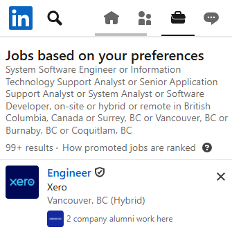

LinkedIn ↗

LinkedIn is a widely used professional networking platform that also offers job search features. Users can connect with recruiters, showcase their skills, and apply for jobs directly through the platform. It is especially useful for building professional relationships and exploring opportunities in the tech industry.